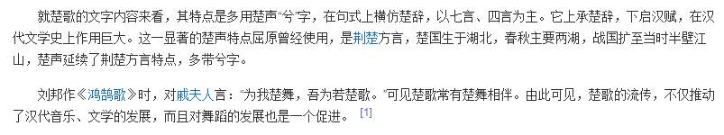

刚爬起来酒劲还在头昏脑胀，上网乱转发现国际一流和谐宜居之都「高学历精英社交圈」正在首页今日头条位置醒目应景推荐一条色目含量甚高的重要情报：
在《设定集》注释〔129〕开头就引用了科技昌明民智大开的当代航天抖音工作者提供的素材并从「超凡矿工」开始展开推理，其中内容不再重复。这里再补充来自欧洲航天工作者提供的素材「扫帚星下凡」：
这颗唤作「67P/Чурюмова-Герасименко」的来自柯伊伯带的扫帚星，待机状态的尺寸就有四千一百米长，真到了勃起的时候，就不知长到哪里去了。不过呢，这个扫帚星的近日点刚进火星轨道，距离三洲通衢远着呢，根据色目太君吹捧的玄幻小说记载，没有雅威或阿拉祂老人家呼召，还未必肯下凡。
真下凡了会咋样？上面的图片已经直观的展现出来了也。
按照国际化大都市「华语第一精日论坛」之上娱乐至死の色目逗哔放话，幕后黑手有足够的能力叫嚣「讨厌的人都要死」，前提是「乌鸦嘴」可以呼召「扫帚星」，否则不过是兵不厌诈の战略欺骗而已。
按照南直隶「远东第一体育论坛」之上武德充沛的肌肉棒子放话，这颗缩写为「楚歌①」的扫帚星，已经被从足协主席到军委主席的高第良将「战神」马尔斯认作干儿子了，迟早进家谱。国际一流和谐宜居之都「高学历精英社交圈」则补充说明，福波斯德莫斯两位衙内也未必是马尔斯和维纳斯亲生，同样疑似早年过继的干儿子，从小带在干爹身边历练。

而在「天子脚下首善之区黄脖子二代论坛」当中，则纷纷痛斥繁荣的简体中文互联网上贩卖焦虑的色目情报掮客，是「恐惧」「惊慌」二位衙内亲自负责。虽然举头三尺有棱镜24×7全方位巡查监视无死角的大手情报机构已经拍摄了短视频泄漏了国家机密兼宇宙奥秘吧（见上图），但是实事求是说有碍观瞻的两位衙内最忌讳人民群众议论其尊容，一定要勒令美术天才炮制二次元形象炒作为「李银河の飒爽美少年」不可（参考：《异闻录》正文〔010〕素材）。
扯远了，回到主题。
在《异闻录》当中已经嘲笑过了，炒作杀伐果断通权达变狠角色开挂升级装哔打脸平砍连击带顺劈一命通关天下布种的幕后黑手所能赞助的武德撑死了也就是炸两栋楼，还特意建议「把天安门广场图腾柱细细的切作臊子」或者「把国会山削平倒过来当浮空城」这种神转折骚操作……结果色目情报掮客表示做不到。
严密的考虑问题，如果真有某个阵营掌握市面上神棍大忽悠或吟游诗人吹嘘的这种能力，不逊色于掰饼撕鱼的神迹，为了在吸收「信仰之力」的时候与「旧神」「古神」划清界限，避免现成的教会换皮碰瓷，应该炸哪里呢？
肯定读者们都想到了嘛，长崎耶路撒冷一颗，广岛麦加一颗，跑得了和尚跑不了庙。再说了，为了展现「新时代神祇」的仁慈，可以从外太空慢慢飞过来，给足了时间让色目人跑路嘛。只要破山伐庙就够了，打打杀杀多么的不和谐吖。
顺便，在旧作《星际参考》2547年3月20日（总第146440期）当中提到了「阿多尼斯」「伊卡鲁斯」，都是近地小行星，下凡的可能性更大。如果两颗不够，没准撒玛利亚麦地那也能招呼上去。
当然，严密的考虑问题，这「新时代神祇」要是色目人，恐怕就该先念两句诗「我本楚狂人，凤歌笑孔丘」再炸布达拉宫扎什伦布寺孔庙龙虎山少林武当了吧？
- ①